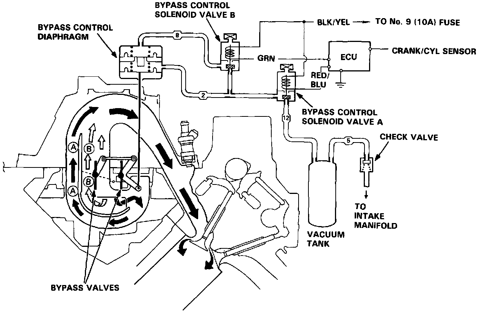
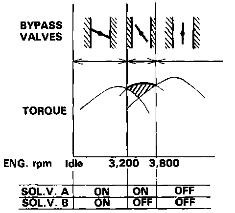

Variable Induction System: Description and Operation

Description
Two air intake paths are provided in the intake manifold to allow the selection of the intake path length most favorable for a given engine speed.

Operation
Satisfactory power performance is achieved by switching the paths. High torque at low RPM is achieved by using the long intake path, whereas high power at high RPM is achieved by using the short intake path.